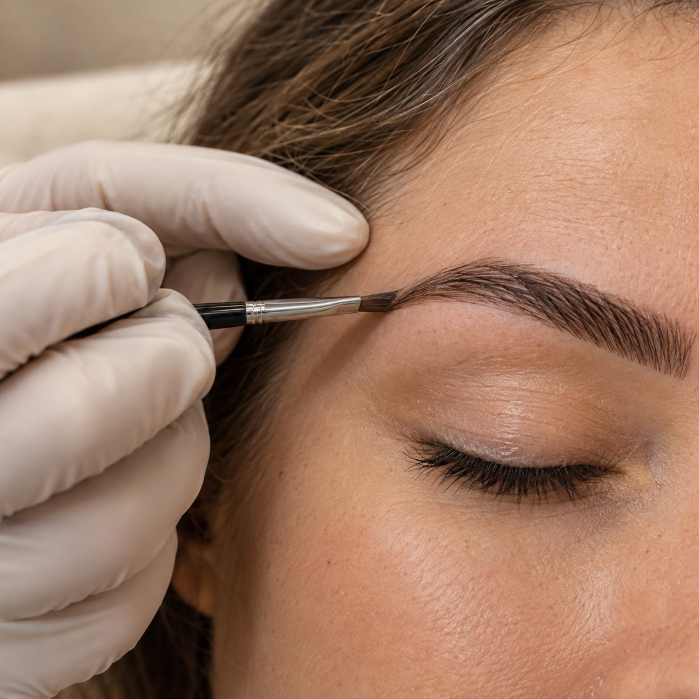
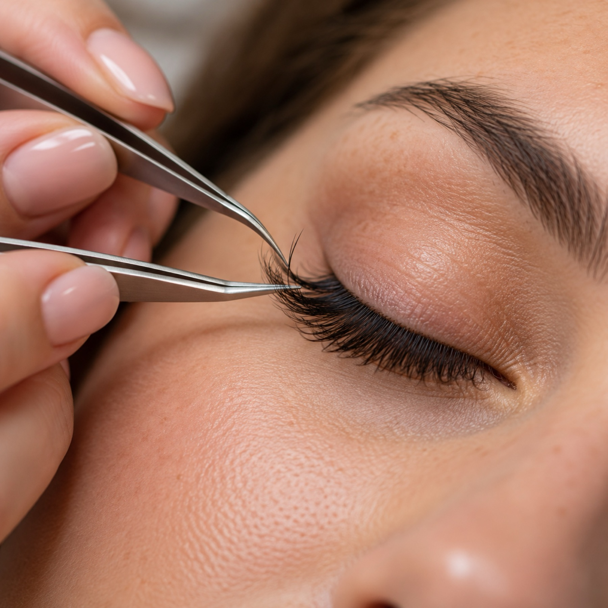

Gesicht & Haut
Erst die Hautanalyse, dann gründliche Reinigung und Pflege nach Hauttyp. Eine Routine für zu Hause bekommst du mit.
Dein Glow-up in Sennestadt: Haut, Brauen, Wimpern. Direkt von Betül.
Seit 2020 mache ich in meinem Studio am Reichowplatz Haut, Brauen und Wimpern. Ich mag es persönlich. Du bekommst eine ehrliche Beratung und gehst mit einem guten Gefühl wieder raus.
Mein Alltag: Studio, Videodrehs, und jede freie Minute bei meinem Pferd Vino. Wie das aussieht, siehst du auf Instagram.
Erst die Hautanalyse, dann gründliche Reinigung und Pflege nach Hauttyp. Eine Routine für zu Hause bekommst du mit.

Eine Form, die zu deinem Gesicht passt und natürlich bleibt. Vorher sprechen wir über deine Wünsche.

Mehr Schwung, ein offener Blick. Abgestimmt auf deine Augenform und deinen Alltag.
„Bei Betül war ich von der ersten Minute an gut aufgehoben. Sie erklärt alles und hat sich Zeit genommen.“
Selin K.„Meine Brauen sehen endlich natürlich aus und passen zu meinem Gesicht.“
Laura M.„Ruhige Atmosphäre, ehrliche Beratung. Und meine Haut war nach dem ersten Termin schon ein Stück klarer.“
Nadine P.Schreib mir per DM oder ruf an. Das Formular geht auch.
touched BY BETÜL ÇAKIR